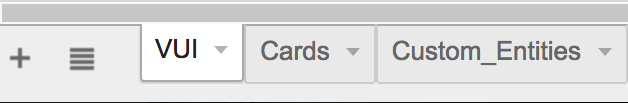

content
Makeskill CLI Overview
Makeskill is a Node.js-based tool that parses a Google Spreadsheet to output batches of Alexa Skill rapid prototypes. Collaborate with your stakeholders through a familiar tool like Google Spreadsheets to make quick Alexa Skills in bulk for testing your concepts. It works best with Amazon's ASK CLI to have a continuous flow between Makeskill automation and deploying through ASK.
- Current Features:
- Auto-generate interaction model and AWS Lambda function (en-US locale) - compatible with ASK CLI
- Can write A-Z Skill batches (Lambda function variations), export 1 at a time
- Accounts only for 1 turn utterance/response interactions
- Early custom slot support
- Early multimodal prototyping support (Echo Show and Echo Spot)
- Can handle Speechcons in SSML in the Batch columns
- After downloading the repository:
// Within your Skill project folder cd makeskill npm link npm install
Developer Audience
If you are a Node.js developer interested in working with the Alexa Skills Kit, then this tool is for you! You can use this to streamline team communication and experiment design for research purposes, while scaffolding an early version of your Alexa Skill. It also provides a quick way for you to familiarize with Alexa technology without being an expert.
Technical Requirements
- Latest Node.js (or v6.11.4)
- Latest npm (or 3.10.10)
- Amazon Developer Account / AWS Account
- Alexa Skills Kit CLI
- Google Spreadsheets / API Key Docs
NOTE: We are working on upgrading to the latest Alexa Skills Kit CLI version; for the preview we are generating code for v1.1.0.
Workflow at a Glance
Plan dialogs and early card design concepts through Spreadsheets. All of the Skill coding is abstracted away (though a developer can easily pick up the autogenerated lambda and interaction model code later). Therefore, you and your team can truly focus on tinkering with the copywriting and experience design as soon as possible!
See Demo Video.
Configuration
There are a couple of technologies stitched together to make up the Makeskill CLI. The tool will need to have permissions configured to talk to AWS so that the deployment process is seemless through the command line. In addition, Makeskill requires a Google Sheets credential in order to grab data from the Spreadsheets.
Makeskill CLI accounts for voice-first, multimodal design. Therefore, there are different parameters that can be configured for varying Skill complexities that we'll detail in this section.
Directory Structure
Simply create a new default template via ASK CLI and then install Makeskill within the directory. Makeskill will override the default interaction model and lambda functions provided.
Your file tree should look something like this after proper installation within ASK CLI framework:
// In your Skill project folder's highest level
Makeskill
lambda
- custom
- index.js
- node_modules
- package.json
models
- en-US.json
skill.json
If not using ASK CLI, you'll just need to change the config file to specify a destination for your autogenerated files. You can manually copy and paste these files into the ASK and AWS tools.
Config File
You can use the mdk_starter script to generate a config file that is tied to the Google Sheet you want to parse from:
npm install chmod u+x mdk_starter.js ./mdk_starter
- Within Makeskill's config.json, you'll see the following:
{ "invocationName": "[NAME_OF_SKILL]", "sheetId": "[SHEET_ID]", "vuiSheet": "[VUI_SHEET_NAME]", "multimodalCards": "[CARD_SHEET_NAME]", "customEntities": "[CUSTOM_ENTITIES_SHEET_NAME]", "defaultBatchLetter": "A", "lambdaFolder": "../lambda/custom", "modelsFolder": "../models" "googleSecret": "./client_secret.json", }
In practice, you'll likely be setting this config file once. The default batch
you'll be exporting according to this config is "A".
Invocation Name
This is a lowercase name that is easy for Alexa to pick up as a user pronounces it. See recommendations from the Alexa invocation name guidelines.
Sheet ID
You'll be adding the ID sandwiched between "d/" and "/edit#gid=0" in your Google Spreadsheet URL to reference in the sheetId attribute in our Makeskill config.json file:

VUI Sheet
This is the name of the sheet you'll be parsing from that's designated only to VUI batches.
Multimodal Cards
This is the sheet responsible for card asset URLs for either Echo Show or Echo Spot. Pair the card batch columns accordingly with VUI sheet columns. Card assets are mapped to the VUI responses via intents. If you want to turn off multimodality, use "" as the assignment.
Custom Entities
If you're making your own slots, be sure to define the custom entities in a separate sheet and link it in the config. Makeskill will automatically render the new interaction model with your canned values.
Default Batch Letter
By default, the config file has batch A exporting for you, which is indicated by "A". Batches B, C, etc would be
denoted by "B", "C", etc up to Z, respectively.
Lambda and Models Folders
In the folders of your choosing, select where the Lambda function and Interaction Model files will be generated. If
using an ASK CLI template, the file paths should be ../lambda/custom and ../models respectively.
Google Secret
The googleSecret attribute references a client_secret.json in order to permit Makeskill to talk to your Google Spreadsheets.
Click this wizard link in step A in the Node.js Quickstart.
Create a project and Continue.
The API should be enabled. Go to credentials.
To add credentials to your project, select "Other UI (e.g. Windows, CLI tool)" to set where the API will be called from.
Select “User data” then “What credentials do I need?”
Use “Makeskill” as the client ID. Create client ID.
Now you can download credentials for your project.
- Populate your client_secret.json file with something like:
{ "installed":{ "client_id":"[UNIQUE_ID].apps.googleusercontent.com", "project_id":"[PROJECT_ID]", "auth_uri":"https://accounts.google.com/o/oauth2/auth", "token_uri":"https://accounts.google.com/o/oauth2/token", "auth_provider_x509_cert_url":"https://www.googleapis.com/oauth2/v1/certs", "client_secret":"[SECRET]", "redirect_uris":[ "urn:ietf:wg:oauth:2.0:oob", "http://localhost" ] } }
Run
makeskill --config [config location]with the Spreadsheet scaffold.In your terminal after running makeskill, you’ll get a prompt to visit a URL to authorize access. Copy and paste that URL into your browser to obtain a code.
Allow for access through the browser.
Copy and paste the code into your terminal where you ran makeskill.
Now, you should be set to make your own skill batches!
Objects
The following are fundamental constructs of the Makeskill method of voice prototyping. There are some tight correlations to Amazon Alexa's voice interface.
Batch
A Batch is essentially a Lambda Function response variation. Basically, if you want to be able to test different responses out and export different Alexa prototypes, using a Batch is the easiest way to do that.
Cards
We want to equip designers with a quick way to preview their Echo Show and Echo Spot cards without having to commit to all the nuances behind body templates in code. Makeskill will parse the Google Spreadsheet for links to public PNGs of whole card mocks.
You can download some templates here. The Sketch file shows a rough approximation to what your cards will look like.
Slots
Slots are useful for making your interaction model smarter. Makeskill Slots have very similar syntax to how you would manually write slots in your interaction model.
Simply depict a new slot name within the {} notation. For custom entities, you can make another sheet tab within called "Custom_Entities" and you can cross-reference those entity definitions from your utterance variations.

Otherwise, if you take a look at Amazon's default supported slots in Slot Type Reference, you can simply refer as {A.SLOT_NAME}.

Custom Entities
If you're making your own slots, be sure to define the custom entities in a separate sheet. Makeskill will automatically render the new interaction model with your canned values.

How To
You can find many examples in our gallery to deconstruct.
Create a Batch
Step 1: Fill out the Google Sheets

For an individual 1-turn Skill, simply fill out your spreadsheet to mimic the following layout for sheet name "VUI". Replace with your Skill's Intents, include utterance variations, and ensure the corresponding responses line up with those intents.

Multimodality is optional in Makeskill. If enabled, you'll need a spreadsheet that looks similar to this for sheet name "Cards". See Early Support for Multimodality section for more details.
Step 2: Export the Skill
When you are finished editing your Google Spreadsheet, you'll need to run the makeskill command from the Makeskill root folder.
- Export the default batch (based on config file):
makeskill --config [config location]
Step 3: Deploy
Now you're ready to deploy. Switch to the project root folder to interact with ASK CLI.
- Deploy your prototype (from project root folder):
cd .. ask deploy
You can now test locally via your device or preferred simulator.
Create Multiple Batches
Step 1: Prepare Your Batches

The philosophy behind Makeskill is the ability to design in bulk in order to pump out multiple Skill experiments. In this sample for sheet name "VUI", a user can export either batch A, B, or C to acquire a corresponding Skill to deploy. When designing multiple batches, the recommendation is to design 3 batch variations at a time with 1 batch being a control. If needed, Makeskill can account for batches A-Z. Currently, a developer can export one of the variations at a time.

Here, we see a sheet name "Cards" that contains public links to card assets. Each card asset column represents a batch.
Step 2: Export Your Batch
- Let's say you wanted to export Batch C:
makeskill --config [config location] --batch C
Step 3: Deploy
Switch to the project root folder. Then you can deploy away.
- Deploy your prototype (from project root folder):
cd .. ask deploy
You can now test locally via your device or preferred simulator.
Embed SSML Speechcons
These response batches will automatically be wrapped in SSML, so a user can also embed Speechcons in the spreadsheet batches to add humanization to Alexa's answers. Use single quotes within your markup.
<say-as interpret-as='interjection'>aw man</say as>! We ran out of chocolate pie!
Evolutionary Prototyping
When you are finished with testing out your Skill concepts in a rapid fashion, you are free to evolve the autogenerated code however you see fit. Makeskill is simply a scaffold for your project, but you'll be responsible for making the code production-ready.
For multimodality, refer to the list of body templates and upgrade the directives for the respective intents you want new cards for in your generated Lambda file. See Display Interface Reference.